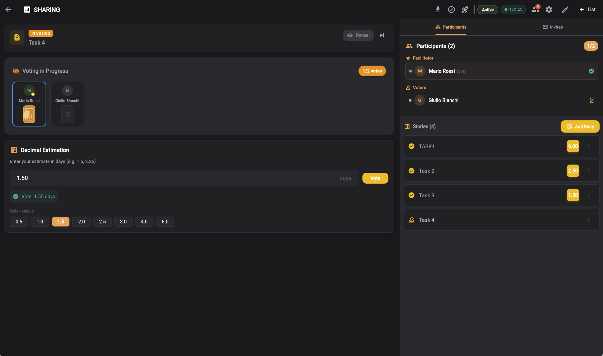
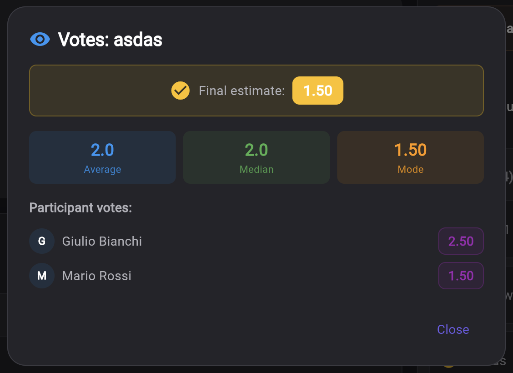
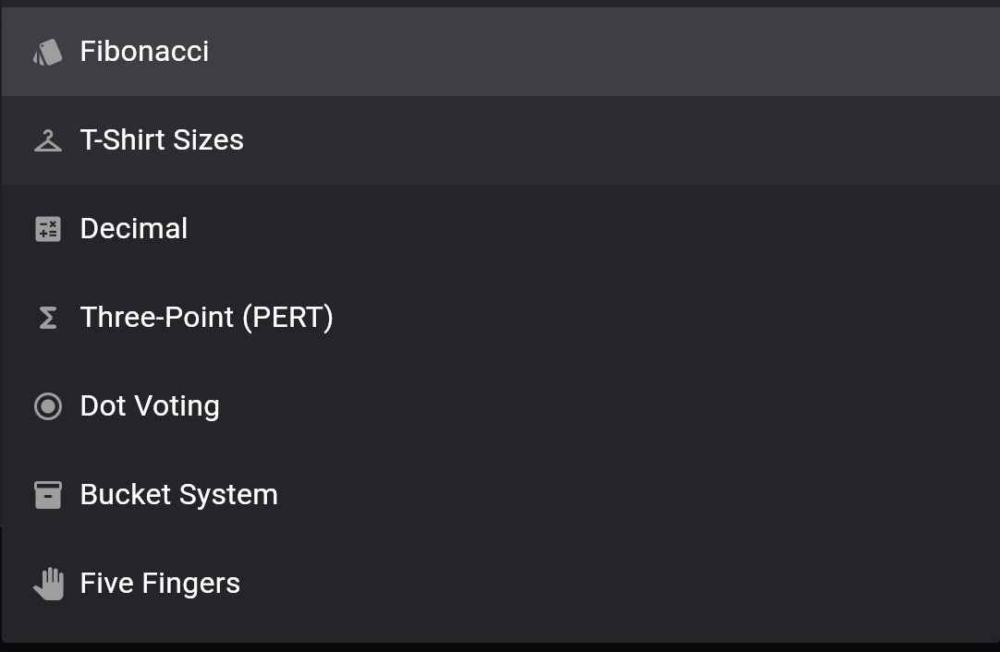
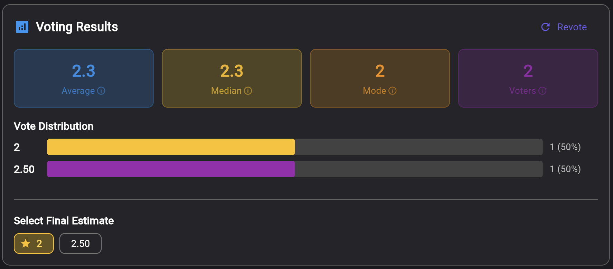
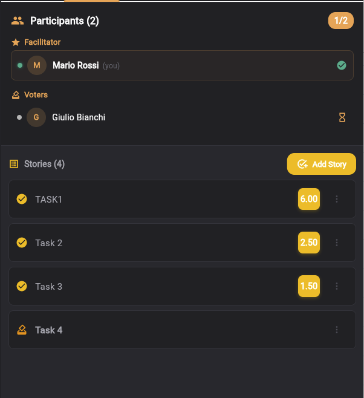
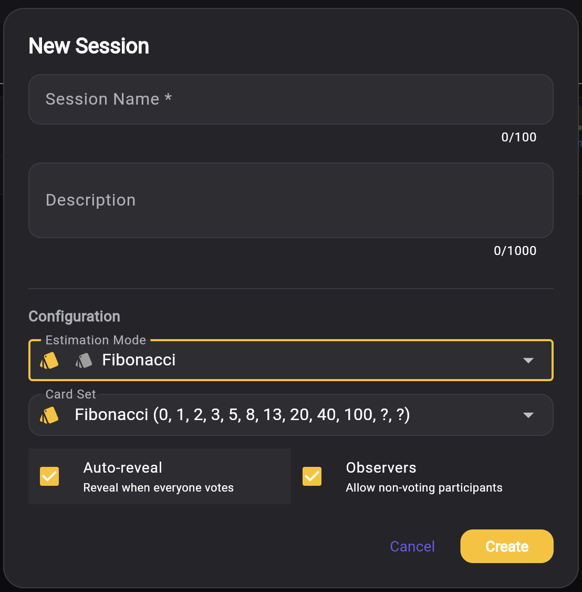

Planning Poker Online Gratis con Votazione Anonima per Team Agili
Stima le user story con 7 metodi — Fibonacci, T-Shirt, PERT, Dot Voting, Bucket System, Five Fingers e Decimale. Votazione anonima in tempo reale con carte nascoste, statistiche dettagliate (media, mediana, moda), rilevamento del consenso e storie illimitate per sessione. Importa storie da Smart Todo, esporta nel backlog Sprint Agile. Permessi per ruolo: Facilitatore, Votante e Osservatore. Noto anche come Scrum Poker, Agile Poker o Team Estimation Game. Accedi con Google e inizia in pochi secondi — completamente gratis.
Inizia a Stimare Gratis →L'Estimation Room in Azione





Come Funziona
Crea una Sessione e Aggiungi le Storie
Scegli tra 7 metodi di stima — Fibonacci, T-Shirt, PERT, Dot Voting, Bucket System, Five Fingers o Decimale. Aggiungi le user story manualmente o importale direttamente dalle tue liste Smart Todo. Invita il team con ruoli specifici: Facilitatore, Votante o Osservatore.

Vota in Modo Anonimo in Tempo Reale
I membri del team votano simultaneamente con carte nascoste — nessuno può vedere le stime degli altri fino al reveal. Questo previene il bias di ancoraggio e garantisce valutazioni genuine. Il tracciamento presenza mostra chi ha votato e chi sta ancora decidendo. Nessun limite al numero di storie che puoi stimare.
Analizza le Statistiche ed Esporta
Dopo il reveal, analizza le statistiche dettagliate — media, mediana, moda e il voto individuale di ogni partecipante. Imposta la stima finale ed esporta i risultati in un progetto Agile Process nuovo o esistente nel backlog sprint. Story point e stime vengono trasferiti automaticamente per la pianificazione immediata dello sprint.
Perché i Team Agili Scelgono Keisen per il Planning Poker
7 Metodi di Stima
Fibonacci, T-Shirt, PERT, Dot Voting, Bucket System, Five Fingers e Decimale — tutti i metodi di cui il tuo team ha bisogno in un unico strumento.
Votazione Anonima
Le carte nascoste prevengono il bias di ancoraggio. Nessuno può vedere i voti degli altri finché il facilitatore non attiva il reveal — garantendo stime genuine e indipendenti.
Statistiche Dettagliate
Media, mediana, moda, deviazione standard, distribuzione dei voti e il voto individuale di ogni partecipante. Piena trasparenza dopo il reveal.
Storie Illimitate
Nessun limite sugli elementi votabili. Stima 5 storie per uno Sprint Planning rapido o più di 100 per una sessione completa di backlog — senza limiti artificiali.
Integrazione Cross-Tool
Importa storie dalle liste Smart Todo. Esporta le stime nel backlog sprint di Agile Process nuovo o esistente con gli story point preservati.
Permessi per Ruolo
Il Facilitatore gestisce la sessione, i Votanti stimano, gli Osservatori seguono senza votare. I ruoli vengono assegnati tramite il sistema di inviti con email.
7 Metodi di Stima per Ogni Team Agile
Fibonacci (Story Point)
Lo standard di riferimento per la stima agile. La sequenza di Fibonacci modificata 0, 1, 2, 3, 5, 8, 13, 20, 40, 100 più ? (incerto) e ☕ (pausa caffè). Gli intervalli crescenti riflettono la naturale incertezza nelle stime più grandi — è più facile distinguere un 3 da un 5 che un 23 da un 25. Usato dalla maggior parte dei team Scrum nel mondo per la stima della complessità relativa.
Ideale per: Stima story point, Sprint Planning, Backlog Refinement
T-Shirt Sizes
Dimensionamento relativo rapido con XS, S, M, L, XL e XXL. Elimina la pressione di assegnare numeri esatti e si concentra esclusivamente sulla complessità relativa. I team confrontano le storie: "Questo task è più vicino a uno Small o a un Medium?" Perfetto per la stima iniziale del backlog, stakeholder non tecnici e team che si avvicinano per la prima volta alla stima agile.
Ideale per: Dimensionamento rapido, stime ad alto livello, team cross-funzionali
Three-Point PERT
Stima statistica in cui ogni votante fornisce tre valori: Ottimistica (caso migliore), Realistica (valore atteso) e Pessimistica (caso peggiore). La formula PERT (O + 4M + P) / 6 produce una stima ponderata. Keisen calcola anche la deviazione standard e la varianza per quantificare il rischio. Essenziale per elementi ad alta incertezza e previsioni di progetto conformi al PMI.
Ideale per: Valutazione rischi, elementi ad alta incertezza, previsioni di progetto
Dot Voting
Prioritizzazione silenziosa in cui ogni partecipante alloca un numero fisso di punti (1-10, default 5) tra le opzioni. Nessuna discussione necessaria — i voti rivelano le vere priorità del team senza bias di gruppo. Ideale per la prioritizzazione delle feature, la pianificazione della roadmap e le decisioni democratiche quando il team deve classificare rapidamente le opzioni.
Ideale per: Prioritizzazione, selezione feature, decisioni democratiche
Bucket System
Stima per affinità che raggruppa gli elementi in bucket di complessità: XS, S, M, L e XL. I team ordinano le storie per complessità relativa anziché per stime precise — "Questo sembra un Large rispetto a quello Small." Perfetto per la stima rapida di backlog ampi (più di 50 storie) dove la precisione individuale è meno importante dell'ordinamento relativo.
Ideale per: Stima backlog ampi, ordinamento rapido, scoping iniziale del progetto
Five Fingers
Votazione rapida da 1 a 5 per il consenso veloce del team. Basato sulla tecnica fist-to-five usata nelle cerimonie agili: 1 = forte disaccordo, 3 = neutrale, 5 = pieno accordo. Semplice, veloce ed efficace. Perfetto per check di confidenza ("Siamo pronti a impegnarci in questo sprint?"), sondaggi rapidi durante gli standup e round di stima leggeri.
Ideale per: Voti di confidenza, sondaggi rapidi, daily standup, consenso rapido
Decimale (Input Libero)
Input decimale libero per stime precise come 1,5, 2,25 o 3,75 giorni. Nessuna carta predefinita — ogni votante inserisce il proprio valore con pulsanti di selezione rapida (0,5, 1,0, 1,5, 2,0, 2,5, 3,0, 4,0, 5,0) per velocizzare. Ideale per la stima basata sul tempo e il tracciamento dell'effort in ore o giorni quando il team necessita di cifre esatte anziché dimensionamento relativo.
Ideale per: Stima basata sul tempo, effort in ore/giorni, valori precisi
Toolkit Completo per la Stima Agile
- 7 metodi di stima che coprono ogni metodologia agile — dagli story point Fibonacci all'analisi rischi PERT, dal dimensionamento T-Shirt al Dot Voting, Bucket System, Five Fingers e input Decimale libero
- Votazione anonima in tempo reale — i membri del team votano simultaneamente con carte nascoste per prevenire il bias di ancoraggio. Nessuno può vedere le stime degli altri finché il facilitatore non attiva il reveal collettivo, garantendo la valutazione genuina di ogni persona
- Storie illimitate per sessione — nessun limite artificiale sul numero di elementi che puoi stimare. Che siano 5 storie per lo Sprint Planning o più di 100 per una sessione completa di Backlog Refinement
- Statistiche dettagliate dei voti — dopo il reveal, visualizza la stima finale, media aritmetica, mediana, moda (voto più frequente), deviazione standard, distribuzione dei voti e il voto individuale di ogni partecipante per la massima trasparenza
- Stima PERT a tre punti con analisi della varianza aggregata su tutti i votanti — quantifica incertezza e rischio con valori Ottimistici, Realistici e Pessimistici
- Permessi per ruolo — Facilitatore (crea la sessione, gestisce le storie, controlla il reveal, imposta le stime finali), Votante (stima le storie), Osservatore (segue senza votare — ideale per gli stakeholder). I ruoli vengono assegnati durante il processo di invito
- Importazione cross-tool — importa storie direttamente dalle tue liste Smart Todo senza dover reinserire titoli e descrizioni dei task. Integrazione fluida del flusso di lavoro
- Esportazione cross-tool — esporta le storie stimate con story point e stime finali in un backlog sprint nuovo o esistente di Agile Process. Le stime vengono trasferite automaticamente per la pianificazione immediata dello sprint
- Sistema di inviti — condividi la sessione di stima tramite inviti email con assegnazione del ruolo. I membri del team si uniscono istantaneamente con i permessi assegnati
- Tracciamento presenza in tempo reale — vedi chi è online, chi ha votato e chi sta ancora decidendo. Monitoraggio heartbeat in tempo reale per team distribuiti
- Auto-reveal — attiva opzionalmente il reveal automatico delle carte quando tutti i partecipanti hanno votato, oppure mantieni il controllo manuale del facilitatore per sessioni strutturate
- Rilevamento automatico del consenso — quando tutti i votanti concordano, il sistema festeggia ed evidenzia la stima unanime
- Ciclo di vita della sessione — gestisci le sessioni attraverso gli stati Bozza → Attiva → Completata con lo storico completo delle storie e dei voti preservato
- Compatibile con dispositivi mobili — design completamente responsive che funziona su smartphone, tablet e browser desktop. Vota da qualsiasi dispositivo, senza bisogno di scaricare un'app
- Accedi con Google e avvia la tua prima sessione in pochi secondi — nessun modulo di registrazione, funziona in qualsiasi browser
- Una moderna alternativa gratuita a PlanITPoker, Scrumpoker-online, PointingPoker e altri strumenti di planning poker — con più metodi di stima e statistiche più approfondite
Completa il tuo flusso di lavoro agile: prioritizza con la Matrice Eisenhower, gestisci i task con Smart Todo, stima con il Planning Poker, pianifica gli sprint con Agile Process e rifletti con la Retrospective Board.
Cos'è il Planning Poker? Origine e Metodo
Il Planning Poker (chiamato anche Scrum Poker o Agile Poker) è una tecnica di stima basata sul consenso utilizzata dai team di sviluppo software agile per stimare l'impegno o la complessità relativa delle user story e dei task.
La tecnica fu descritta per la prima volta da James Grenning nel 2002 e successivamente resa popolare da Mike Cohn nel suo influente libro Agile Estimating and Planning (2005). L'idea di base è semplice: ogni membro del team seleziona privatamente una carta che rappresenta la propria stima, poi tutte le carte vengono rivelate simultaneamente. Questo approccio di votazione anonima previene il bias di ancoraggio — la tendenza dei membri del team a farsi influenzare dalla prima stima che sentono, specialmente se proviene da colleghi più esperti.
La sequenza di Fibonacci (0, 1, 2, 3, 5, 8, 13, 20, 40, 100) è la scala più diffusa perché gli intervalli crescenti tra i numeri riflettono la naturale incertezza nelle stime: è facile distinguere tra una storia da 3 punti e una da 5, ma molto più difficile tra un 23 e un 25. Questo spinge i team a ragionare in termini di complessità relativa anziché di falsa precisione.
Keisen porta il Planning Poker nell'era digitale con 7 metodi di stima che vanno oltre il solo Fibonacci, votazione anonima in tempo reale per team remoti e in presenza, analisi statistiche dettagliate dopo ogni round e integrazione fluida con gli strumenti di gestione dei task e pianificazione degli sprint.
Domande Frequenti
Quali metodi di stima sono disponibili in Keisen?
Keisen Estimation Room offre 7 metodi di stima: Fibonacci (sequenza classica story point 0, 1, 2, 3, 5, 8, 13, 20, 40, 100 con carte ? e pausa caffè), T-Shirt Sizes (da XS a XXL per il dimensionamento relativo rapido), Three-Point PERT (Ottimistica + 4x Realistica + Pessimistica / 6 con analisi della varianza), Dot Voting (allocazione silenziosa di punti per la prioritizzazione), Bucket System (raggruppamento per affinità di complessità), Five Fingers (votazione rapida 1-5 per consenso veloce) e Decimale (input libero per stime precise come 1,5 o 2,75 giorni).
Il Planning Poker è gratuito?
Sì, Keisen Planning Poker ed Estimation Room è completamente gratuito senza limiti nascosti. Puoi creare sessioni di stima, aggiungere storie illimitate, invitare tutto il team, votare in tempo reale e consultare statistiche dettagliate per tutti e 7 i metodi di stima. Accedi con Google e inizia a stimare in pochi secondi.
Come funziona la votazione anonima?
Tutti i membri del team votano simultaneamente con carte nascoste — nessuno può vedere i voti degli altri fino al reveal. Ogni votante seleziona la propria stima in modo indipendente. Una volta che tutti hanno votato, il facilitatore rivela tutte le carte contemporaneamente (oppure si può attivare l'auto-reveal). Il sistema calcola quindi le statistiche tra cui media, mediana, moda e rilevamento del consenso. Questo approccio anonimo garantisce valutazioni genuine senza l'influenza di membri senior o partecipanti più vocali.
Cos'è la stima Three-Point (PERT)?
Three-Point PERT è una tecnica di stima statistica in cui ogni votante fornisce tre valori: Ottimistica (caso migliore), Realistica (valore atteso) e Pessimistica (caso peggiore). La formula PERT (O + 4M + P) / 6 produce una stima ponderata che tiene conto dell'incertezza. Keisen calcola anche la deviazione standard e la varianza per quantificare il rischio della stima. Ideale per elementi ad alta incertezza e previsioni di progetto.
Posso importare storie da altri strumenti Keisen?
Sì, Keisen offre un'integrazione cross-tool completa. Puoi importare storie direttamente dalle tue liste Smart Todo in una sessione di stima — senza dover reinserire titoli e descrizioni dei task. Dopo la stima, puoi esportare i risultati con story point e stime finali in un backlog sprint di Agile Process nuovo o esistente. Questo crea un flusso di lavoro integrato dalla gestione dei task alla stima fino alla pianificazione dello sprint.
Posso usare il Planning Poker con un team remoto?
Sì, Keisen è progettato sia per team remoti che in presenza. Funziona in qualsiasi browser senza software da installare. I membri del team possono partecipare tramite link di invito, votare in modo anonimo in tempo reale e vedere i risultati istantaneamente. Il tracciamento presenza mostra chi è online, chi ha votato e chi sta ancora decidendo — perfetto per team agili distribuiti su fusi orari diversi.
Quali statistiche vengono mostrate dopo la votazione?
Dopo il reveal dei voti, Keisen mostra un pannello statistiche dettagliato per ogni storia: la stima finale impostata dal facilitatore, media aritmetica, mediana, moda (voto più frequente) e il voto individuale di ogni partecipante. Per la stima PERT, mostra anche i valori PERT aggregati, la deviazione standard media e la varianza totale di tutti i votanti. Puoi consultare i dettagli dei voti per qualsiasi storia in qualunque momento.
Come funzionano i ruoli e i permessi?
Keisen supporta tre ruoli con permessi specifici: Facilitatore (crea la sessione, gestisce le storie, controlla i tempi del reveal, imposta le stime finali), Votante (partecipa ai round di stima, vota sulle storie, visualizza le statistiche) e Osservatore (segue la sessione e visualizza i risultati senza votare — ideale per stakeholder e product owner). I ruoli vengono assegnati durante il processo di invito via email.
C'è un limite al numero di storie?
No, non c'è alcun limite al numero di storie che puoi stimare in una singola sessione. Aggiungi tutte le user story di cui il tuo team ha bisogno — che siano 5 per uno Sprint Planning rapido o più di 100 per una stima completa del backlog. Tutte le storie vengono tracciate con lo storico delle votazioni e le stime finali.
L'Estimation Room funziona su dispositivi mobili?
Sì, Keisen Estimation Room è completamente responsive e funziona su smartphone, tablet e browser desktop. I membri del team possono votare, visualizzare le statistiche e partecipare alle sessioni di stima da qualsiasi dispositivo — senza bisogno di scaricare un'app. Le carte di voto, i pannelli statistiche e le liste partecipanti si adattano alle dimensioni dello schermo.
In cosa Keisen è diverso da PlanITPoker, Scrumpoker-online o PointingPoker?
Keisen offre 7 metodi di stima (la maggior parte dei tool supporta solo Fibonacci), stima PERT a tre punti integrata con analisi della varianza, Dot Voting e Bucket System per la prioritizzazione avanzata, storie illimitate per sessione, permessi per ruolo (Facilitatore, Votante, Osservatore), integrazione cross-tool con Smart Todo e Agile Process, tracciamento presenza in tempo reale e statistiche dettagliate per ogni storia con storico dei singoli voti — tutto completamente gratis senza barriere di registrazione.
Cos'è il Planning Poker e perché i team agili lo usano?
Il Planning Poker (detto anche Scrum Poker) è una tecnica di stima basata sul consenso in cui ogni membro del team seleziona privatamente una carta che rappresenta la propria stima. Le carte vengono rivelate simultaneamente per evitare il bias di ancoraggio. Se le stime differiscono in modo significativo, il team discute e rivota fino a raggiungere il consenso. La tecnica fu descritta per la prima volta da James Grenning nel 2002 e successivamente resa popolare da Mike Cohn in Agile Estimating and Planning. I team la usano perché la votazione anonima e simultanea produce stime più accurate rispetto alla discussione aperta.
Cosa sono gli story point e perché si usa la sequenza di Fibonacci?
Gli story point sono un'unità di misura relativa usata in ambito agile per stimare l'impegno o la complessità delle user story. La sequenza di Fibonacci (0, 1, 2, 3, 5, 8, 13, 20, 40, 100) viene usata perché gli intervalli crescenti tra i numeri riflettono la naturale incertezza nelle stime di elementi più grandi — è più facile distinguere tra un 3 e un 5 che tra un 23 e un 25. Questo spinge i team a ragionare in termini di complessità relativa anziché di falsa precisione. Keisen usa la sequenza di Fibonacci modificata standard nell'agile, più le carte ? (incerto) e pausa caffè.
Scopri gli Altri Strumenti Keisen
Pronto a stimare insieme al tuo team?
Inizia a stimare le user story con il tuo team usando 7 metodi collaudati — completamente gratis.
Inizia a Stimare Gratis →